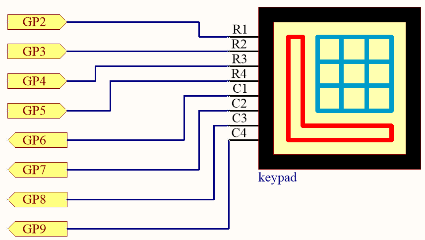
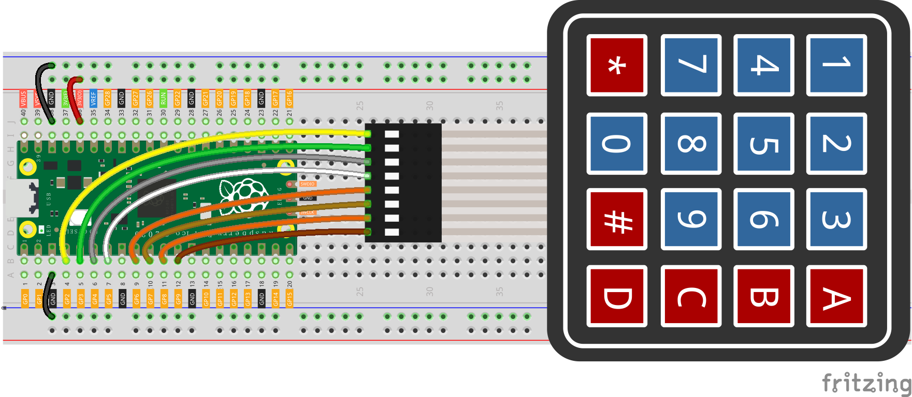
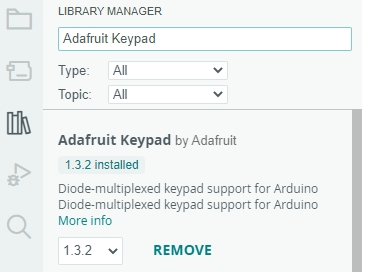

Note
Hello, welcome to the SunFounder Raspberry Pi & Arduino & ESP32 Enthusiasts Community on Facebook! Dive deeper into Raspberry Pi, Arduino, and ESP32 with fellow enthusiasts.
Why Join?
Expert Support: Solve post-sale issues and technical challenges with help from our community and team.
Learn & Share: Exchange tips and tutorials to enhance your skills.
Exclusive Previews: Get early access to new product announcements and sneak peeks.
Special Discounts: Enjoy exclusive discounts on our newest products.
Festive Promotions and Giveaways: Take part in giveaways and holiday promotions.
👉 Ready to explore and create with us? Click [here] and join today!
4.2 - 4x4 Keypad¶
The 4x4 keyboard, also known as the matrix keyboard, is a matrix of 16 keys excluded in a single panel.
The keypad can be found on devices that mainly require digital input, such as calculators, TV remote controls, push-button phones, vending machines, ATMs, combination locks, and digital door locks.
In this project, we will learn how to determine which key is pressed and get the related key value.
Schematic

The rows of the keyboard (G2 ~ G5) are programmed to go high; if one of G6 ~ G9 is read high, then we know which key is pressed.
For example, if G6 is read high, then numeric key 1 is pressed; this is because the control pins of numeric key 1 are G2 and G6, when numeric key 1 is pressed, G2 and G6 will be connected together and G6 is also high.
Wiring

Code
Note
You can open the file
4.2_4x4_keypad.inounder the path ofeuler-kit/arduino/4.2_4x4_keypad.Or copy this code into Arduino IDE.
Then select the Raspberry Pi Pico board and the correct port before clicking the Upload button.
The
Adafruit Keypadlibrary is used here, you can install it from the Library Manager.
After the program runs, the Shell will print out the keys you pressed on the Keypad.
How it works
Including the Library
We start by including the
Adafruit_Keypadlibrary, which allows us to easily interface with the keypad.#include "Adafruit_Keypad.h"
Keypad Configuration
const byte ROWS = 4; const byte COLS = 4; char keys[ROWS][COLS] = { { '1', '2', '3', 'A' }, { '4', '5', '6', 'B' }, { '7', '8', '9', 'C' }, { '*', '0', '#', 'D' } }; byte rowPins[ROWS] = { 2, 3, 4, 5 }; byte colPins[COLS] = { 8, 9, 10, 11 };
The
ROWSandCOLSconstants define the dimensions of the keypad.keysis a 2D array storing the label for each button on the keypad.rowPinsandcolPinsare arrays that store the Arduino pins connected to the keypad rows and columns.
Initialize Keypad
Create an instance of
Adafruit_KeypadcalledmyKeypadand initialize it.Adafruit_Keypad myKeypad = Adafruit_Keypad(makeKeymap(keys), rowPins, colPins, ROWS, COLS);
setup() Function
Initialize Serial communication and the custom keypad.
void setup() { Serial.begin(9600); myKeypad.begin(); }
Main Loop
Check for key events and display them in the Serial Monitor.
void loop() { myKeypad.tick(); while (myKeypad.available()) { keypadEvent e = myKeypad.read(); Serial.print((char)e.bit.KEY); if (e.bit.EVENT == KEY_JUST_PRESSED) Serial.println(" pressed"); else if (e.bit.EVENT == KEY_JUST_RELEASED) Serial.println(" released"); } delay(10); }